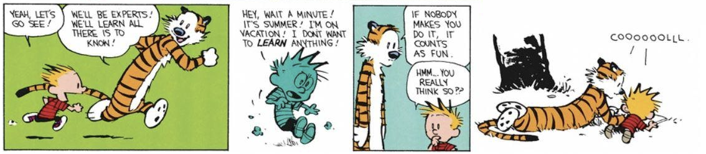
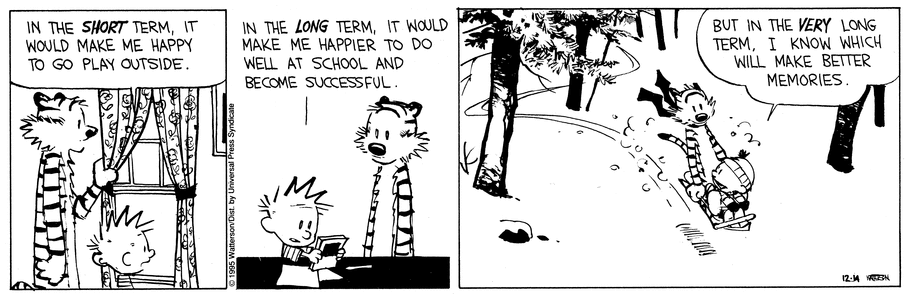

Extension of my thoughts about play and discussions from our Interact Circle on Hackathon Culture and Play.
Defining play
I’ve spent so much time thinking about how to ‘bring back play’, yet not a lot of thinking about what play is. The more I think about it, the more nebulous it feels to define. I know examples of it when I see it — the building of blanket forts during sleepovers, the joy of beating Minecraft for the first time with your friends — but putting it into words feels difficult.
The most intuitive definition is one that comes from Bill Watterson: play is anything that you do on your own volition or agency just for its own sake. It is an intrinsically motivated, paratelic activity.

Play is the act of enjoying the process, the means to the end. To have as much fun as possible along the way. Quoting Kernel, to “turn life into a canvas, rather than a graph with checkpoints”.
Yet this definition still seems inadequate. What separates work from play? Are they mutually exclusive? What about those who cannot afford time out of their day to do anything but work? Those who play games professionally?
Here, I turn to Jenny Odell’s How to Do Nothing and Bernard Herbert Suit’s The Grasshopper: Games, Life, and Utopia to further explore this definition.
How to Do Nothing
Odell’s book How to Do Nothing focuses on resisting the current attention economy. Doing ‘nothing’ within a productivity-obsessed environment can, in fact, help to restore communities, both locally and beyond.
‘Nothing’, in this case, refers not to actually doing nothing but rather to not participating in the attention economy and hustle culture. ‘Nothing’ means doing nothing productive.
Recently, I have been grappling with the question of whether self-care is selfish. My inner self wants to be able to do nothing: just do projects I find fun, hang out with my friends, and go outside. However, I know that long term, working hard at doing well at my job and in school will do me more good, career-wise.

How can I justify setting aside time to do nothing when I have so many people asking for my time and pulling me in so many directions? In the attention economy, attention is scarce.
Play allows us to create environments where saying ‘no’ is okay. By definition, nobody forces you to play. Play is what allows us to create local spaces of abundance.
“Caring for myself is not self-indulgence, it is self preservation, and that is an act of political warfare.”
Play is the catalyst that will enable the post-attention-economy society. But what do we do when we get there?
The Grasshopper
Of all the things you could do in utopia, why would one play games?
The Grasshopper was a book unlike any I’ve ever read before. A talking grasshopper and his insect disciples convinced me, through Socratic dialogue nonetheless, that “refusing to work and insisting upon devoting himself exclusively to play” is a perfectly acceptable thing to embody.
Whereas Odell focused on how to get to a post-work society, Suit’s approach to play and games focuses on what to do in a post-work society. A utopia of doing absolutely nothing feels dreadfully boring. What is there left to do? To play games, obviously!
When I say ‘game’, I don’t just mean chess, basketball, or a video game. I mean a more holistic one that includes climbing mountains, the pursuit of knowledge, and the creation of art itself.
Games, as Suits defines it, are “goal-directed activities in which inefficient means are intentionally chosen.” In games, one purposefully ignores the more efficient method. To play a game is to do the crossword puzzle without looking up the answers, even though looking it up would be the most efficient way of finishing the crossword. The added rules and restrictions are what make possible the act of playing outside of the endless pursuit of efficiency.
Playing a game is the voluntary attempt to overcome self-imposed obstacles.
A post-work society
In fact, I posit that play is not only necessary but the only thing that can exist in a post-work utopia. Let us explore this argument through a Socratic dialogue.
Characters
- G: the player of games.
- S: the disillusioned worker, a skeptic.
G: I would rather die than work another day, toiling away to produce goods and services in an attempt to sate the infinitely hungry needs of society.
S: You talk as though there are only two possibilities: either a life devoted exclusively to play or a life devoted exclusively to work. How will you feed yourself? Put a roof over your head?
G: The only argument against the life I wish to lead is death. One dies if they do not work. Yet, death is also inevitable. To continue to work is to bring about the death of my character, my curiosity about the world, my will to exist. To continue to work would effectively cause my death. If I die regardless, I might as well live a life I fully enjoy, if not short. What is life for, if not to enjoy it and to seek pleasure out of things you find valuable?
S: This seems awfully hedonistic of you. What about personal fulfillment? Don’t you have responsibilities to the rest of society? If everybody lived like you, society itself would collapse.
G: I am not saying everyone should lead the life I claim to want. I simply claim that this life is the one that would lead me to be the most fulfilled. However, is it wrong to dream of a future where a life like mine could be the norm? To create shared fiction we can rally around and build towards? Having dreamers who believe in and drive this vision forward are a necessary step to manifest it into reality.
S: I guess there is no harm to dreaming a little. I’m curious what this future of yours could look like.
G: Wonderful. Let us imagine an utopic future where all work has been automated by machines activated purely through thought, requiring no labour to maintain its running cogs or to provide its goods and services to society. This is a utopia of abundance. Anything you could wish for, you can have: food, luxury, knowledge, happiness. In this utopia, one does not need to work to sustain themselves. I argue that there is no work to be done here. In fact, the only rational activity is to play.
S: Forgive my interruption, but how do you define ‘play’ here? Isn’t it at odds with your definition of ‘work’?
G: I suppose I should clarify some terminology. Let us first define something as instrumental if it serves as the means to an end (i.e. as a way to accomplish a goal). Work then, is explicitly defined as labour which is instrumentally valuable.
Play, on the other hand, is defined as labour which is non-instrumental. It should be intrinsically valuable and self-motivated. Games, then, are the reversal of means and ends. When playing, the means that traditionally entail an end become the ends themselves.
Let us take mountain climbing as an example. Say person A considers reaching the top as the end goal. For A, climbing is just a means of reaching the top. If a helicopter came by to offer them a lift to the top, they would happily take it.
Say person B climbs mountains for the thrill of climbing itself. B actually doesn’t really care if they reach the top each time, it is just a means for them to climb more mountains. Even if a helicopter offered B a ride to the top, they would happily decline and continue their trek up the side of the mountain.
Person A clearly considers mountain climbing work whereas B considers mountain climbing play.
S: Ah, I see. This clarifies my understanding of how you define ‘work’ and ‘play’, but I still have a counterpoint. What about those who enjoy their work? The scientist, who after a great effort, has a major breakthrough on a problem they’ve been stumped on for ages. Far from rejoicing in the discovery, they are eagerly searching for their next challenge to be engaged once more. The carpenter who builds houses because she likes how they look and the feeling of it coming together. Can these individuals not exist in your utopia?
G: Hmm. I would posit that both of the mentioned individuals are actually playing games. The resolution appears to be the fact that activities which one views as instrumentally valuable (work) can, for another, be intrinsically valuable (play). The human experience is subjective, there is no universal standard for whether society considers something work or play. An environment of play is created when one self-imposes rules to prevent them from the most efficient way of achieving their goal.
To the carpenter who enjoys building for its own sake, that otherwise instrumental activity has intrinsic value as well. The same could be true of anyone who really enjoys their work, whatever that work might be. This is the definition of game playing.
S: This does make a lot of sense. So in this utopia that you propose, I could theoretically just do what I find intrinsically valuable — play? And I suppose the rest of my needs would be met by the machines?
G: Correct.
S: I am excited to create this utopia of ours. Let us dream together then.
A re-worked definition
Obviously, this is an exaggeration of the argument I’m hoping to make — we clearly don’t live in this caricature of a post-instrumental society. However, we do live in is a society that is malleable to change.
Language is one of the only logically decentralized aspects of humanity. It is also one that has considerable effects on how we think about ourselves and the world.
We started off this journey by asserting that our current accepted definition of play was inadequate. In its place, we offer a plurality of alternatives:
- Play is an intrinsically motivated activity.
- Play is labour which is non-instrumental.
- Play is the act of enjoying the means to the end.
- Play is what allows us to create local spaces of abundance.
Re-defining play gives us power in the form of shared fiction which we can build towards and manifest into reality.
Here’s to building the future we can play in.